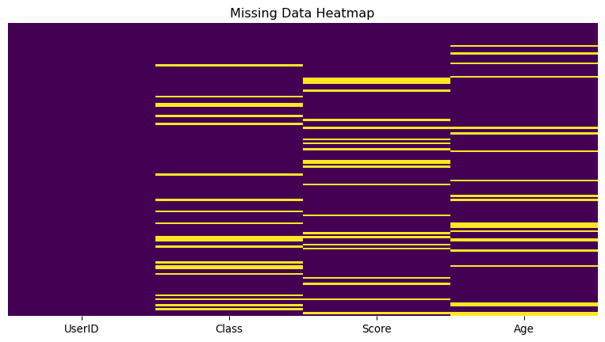

| Roll | Age | State | Score | |
|---|---|---|---|---|
| 0 | 1001 | 25 | AP | 85.0 |
| 1 | 1002 | ? | AR | 90.5 |
| 2 | 1003 | NaN | AS | 78.0 |
| 3 | 1004 | 45 | NaN | 88.0 |
| 4 | 1005 | 22 | CG | NaN |
| 5 | 1006 | NaN | GA | 92.0 |
| 6 | 1007 | 29 | NaN | 74.0 |
| 7 | 1008 | ? | HR | 81.5 |
| 8 | 1009 | 28 | JK | 79.0 |
| 9 | 1010 | 35 | JH | NaN |
Indian Institute of Technology, Madras
| Roll | Age | Country | Course | Score | Result |
|---|---|---|---|---|---|
| 1001 | 30 | USA | ? | 15 | F |
| 1002 | 0 | France | Math | 9999 | Pass |
| 1003 | 27 | China | English | 78 | NA |
| 1004 | 30 | - | NaN | 22 | Fail |
| 1005 | 25 | Sweden | Science | 65 | Unknown |
| 1006 | UK | NULL | 48 | Pass |
NaN, NULL, , NA, ?, -, Unknown, 0, 9999
| Roll | Age | State | Score | |
|---|---|---|---|---|
| 0 | 1001 | 25 | AP | 85.0 |
| 1 | 1002 | ? | AR | 90.5 |
| 2 | 1003 | NaN | AS | 78.0 |
| 3 | 1004 | 45 | NaN | 88.0 |
| 4 | 1005 | 22 | CG | NaN |
| 5 | 1006 | NaN | GA | 92.0 |
| 6 | 1007 | 29 | NaN | 74.0 |
| 7 | 1008 | ? | HR | 81.5 |
| 8 | 1009 | 28 | JK | 79.0 |
| 9 | 1010 | 35 | JH | NaN |
<class 'pandas.core.frame.DataFrame'>
RangeIndex: 20 entries, 0 to 19
Data columns (total 4 columns):
# Column Non-Null Count Dtype
--- ------ -------------- -----
0 Roll 20 non-null int64
1 Age 15 non-null object
2 State 16 non-null object
3 Score 16 non-null float64
dtypes: float64(1), int64(1), object(2)
memory usage: 772.0+ bytes| Roll | Age | State | Score | |
|---|---|---|---|---|
| 0 | False | False | False | False |
| 1 | False | False | False | False |
| 2 | False | True | False | False |
| 3 | False | False | True | False |
| 4 | False | False | False | True |
| 5 | False | True | False | False |
| 6 | False | False | True | False |
| 7 | False | False | False | False |
| 8 | False | False | False | False |
| 9 | False | False | False | True |
| 10 | False | True | False | False |
| 11 | False | False | True | False |
| 12 | False | False | False | True |
| 13 | False | False | False | False |
| 14 | False | False | False | False |
| 15 | False | False | False | False |
| 16 | False | False | False | False |
| 17 | False | True | False | True |
| 18 | False | True | False | False |
| 19 | False | False | True | False |

Q: What are missing values?
Missing values represent the absence of data for a particular record
Q: What causes a dataset to have missing values?
Human error during data entry / transfer, sensor or machine failure, data corruption, unresponded queries in survey are few causes among many others
Q: Why is it important to handle missing data?
Takeaway - Data could be missing but not lost!
Simple Imputer
Replaces the missing value using a descriptive statistic among mean, median or most_frequent(mode) along each column, or using a constant value.
KNN Imputer
Each sample’s missing values are imputed using the mean value from n_neighbors nearest neighbors found in the training set.
array([[ 7., 2., 3.],
[ 4., 2., 6.],
[10., 2., 9.]])array([[1. , 2. , 4. ],
[3. , 4. , 3. ],
[5.5, 6. , 5. ],
[8. , 8. , 7. ]])Imagine you are analyzing the household income data across different neighborhoods in a city. You notice that for some areas, the income values are missing.
We can use a missingness indicator!
In situations characterized by Missing Completely At Random (MCAR), the absence of data occurs randomly and is unrelated to any variable in the dataset or the missing values themselves. The probability of missingness is same for all observations. There exists no underlying pattern to the missingness. The missing values are completely independent of other data. All statistical analysis performed on the dataset will remain unbiased in this case.
For example, during data collection, if some responses were not collected due to a technical error, then the missing data is completely at random.
In instances of Missing At Random (MAR), the absence of data can be entirely explained by the values of other known variables in the dataset. There exists some form of pattern in the missing values.
For example, In a survey, women might be unwilling to disclose their age. Here the missingness of the variable age can be explained by another observed variable “gender”.
In this case, the missingness is neither MCAR nor MAR. The fact that a datapoint is missing is dependent on the value of the data point. In order to correct for the bias we would have to make modelling assumptions about the nature of the bias.
For example, in a social survey where individuals are asked about their income, respondents may not disclose it if it is too high or too low. Thus the missingness in the feature income is directly related to the values of that feature. For example, if a patient’s measurement was not taken because the doctor felt he was too sick, that observation would not be MAR or MCAR. In this case the missing data mechanism causes our observed training data to give a distorted picture of the true population, and data imputation is dangerous in this instance.